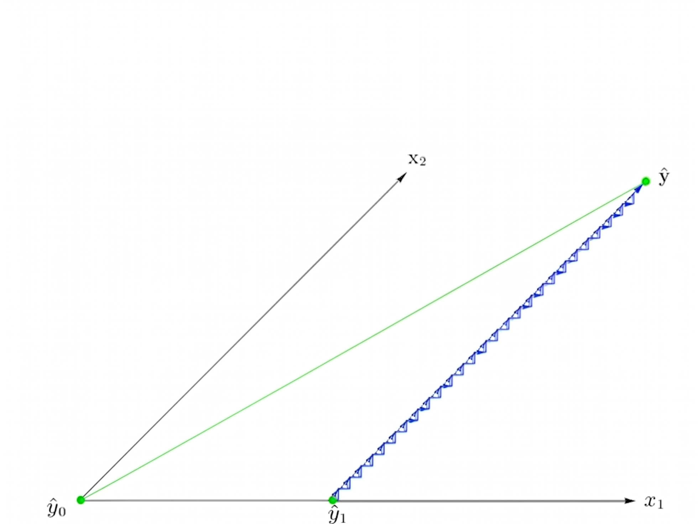
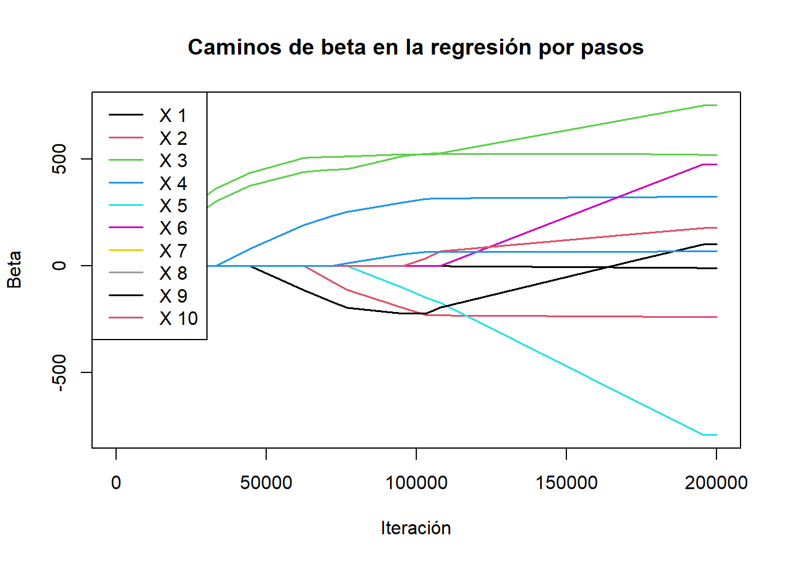

En los problemas de regresión actuales, hay ocasiones en las que el número de covariables supera el número de observaciones y nosotros, como estadísticos, estamos forzados a confrontar esta situación. La pregunta de cuáles predictores incluir para la regresión es difícil de contestar, y es por eso que se han desarrollado algunos algoritmos para resolver esta situación, como lo son la regresión por pasos (selección hacia delante o eliminación hacia atrás). El problema con este algoritmo es que puede descartar algunas variables que tal vez eran importantes para la regresión. A lo largo de este trabajo consideramos el modelo usual \[
y= X\beta+\varepsilon,\quad \varepsilon \sim N_p(0,\sigma^2I),
\tag{1.1}\] donde \(X\) es una matriz de rango completo de dimensiones \(n\times p\). la cual no contiene a la columna usual de 1’s (notemos que el estimador \(\hat\beta_0\) solo depende de y \(y, X\) y de los demás \(\hat \beta_j\), por lo que podemos calcularlo después). Además, supondremos que \[
\overline y=\sum_{i=1}^n y_i=0,\quad \overline{x_i}=\sum_{i=1}^nx_{i,j}=0,\quad \sum_{i=1}^jx_{i,j}^2=1,
\] lo cual siempre es posible realizando una transformaciones de localización y escala.
1.2 Regresión por pasos
La idea de este algortimo es ir construyendo el modelo sucesivamente, añadiendo predictores hasta que estemos satisfechos y actualizando nuestra estimación \(\hat y\) en cada iteración. La corrlación entre \(x_i\) y un residual \(y-\hat y\) está dada por
\[
\frac{\sum_{j=1}^n (x_{i,j}-\overline{x_i})(y_j-\hat y_j-\overline y+\overline{\hat y} )}{\sqrt{\sum_{j=1}^n(x_{i,j}-\overline{x_i})^2}\sqrt{\sum_{j=1}^n(y_j-\hat y_j-\overline{y}+\overline{\hat y})^2}}=\frac{\langle x_i,y -\hat y\rangle}{||y-\hat y||}\propto \langle x_i,y-\hat y\rangle.
\tag{1.2}\] Entonces, para encontrar el predictor más correlacionado con \(y\) suponiendo que tenemos una estimacion \(\hat y\) , únicamente tenemos que calcular el vector de correlaciones parciales
\[
c=X^T(y-\hat y).
\tag{1.3}\]
Luego, añadimos la variable con la correlación más alta y repetimos este proceso hasta alguna condición de paro, por ejemplo utilizando una prueba \(F\) para comparar modelos reducidos. Calcular los coeficientes de la regresión \(\hat\beta\) en cada paso (para calcular \(\hat y\)) es computacionalmente muy costoso. Sin embargo, podemos hacerlo un poco más eficiente. Recordemos el algoritmo de ortogonalización de Gram-Shmidth. Este algoritmo ocurre también por pasos, por lo que encaja perfectamente en la regresión por pasos. Entonces, aplicamos Gram-Shcmidth en la marcha y en cada paso tenemos \(x_{n_1},\dots, x_{n_r}\) y \(z_{n_1},\dots, z_{n_r}\) que son los \(x\)’s ortogonalizados. Luego, si consideramos la matriz \(Z\) con columnas \(z_{n_1},\dots, z_{n_r}\), tenemos que \[
\hat\beta = (Z^TZ)^{-1}Z^Ty=Z^Ty.
\] Como \(\text{Col}(Z)=\text{Col}(X)\) y las matrices de proyección ortogonal son únicas, se tiene que \(\hat y=X\hat\beta=Z\hat\beta\) Con esto, nuestro algoritmo queda de la siguiente manera
Notemos que el algortimo por pasos tiene una desventaja, si bien se llega a la solución en muy pocas iteraciones y tomamos la decisión óptima en cada paso del algoritmo, no tenemos en cuenta la optimalidad del algoritmo como un todo. Consideremos el siguiente escenario: supongamos que en algún momento del algoritmo añadimos la variable \(x_j\). Entonces, en el siguiente paso se tiene que
\[
x_j^Ty=x_j^T\hat y \Rightarrow x_j^T(y-\hat y)=0.
\tag{1.5}\]
Así, si hay una variable que esté correlacionada con \(x_j\), el algoritmo la olvida, incluso si antes de incluir a \(x_j\) su correlación parcial era alta.
Un intento de remediar este problema es la regresión por etapas. Notemos que en el algoritmo anterior, añadimos una variable a nuestro modelo y todo el “peso” de esta variable, en el sentido de que la estimación \(\hat y\) se actualiza al estimador de mínimos cuadrados, de manera que como observamos en Ecuación 1.5 su correlación parcial será 0 siempre. El algoritmo de regresión por etapas permite añadir un poco de una variable en cada iteración, sin añadirla completamente al modelo. En este caso, lo que hacemos es ir construyendo la estimación \(\hat y\) iterativamente.
Para hacer esto, fijamos \(\varepsilon>0\) pequeño. Luego, hacemos lo siguiente iterativamente:
Calculamos el vector de correlaciones parciales Ecuación 1.3\(c\) .
Elegimos \(\hat j=\arg\max\{|c_j|\}\).
Actualizamos \(\hat y=\hat y +\varepsilon\cdot \text{sign}(c_{\hat j})\cdot x_{\hat j}\).
Nuestro algoritmo se detiene cuando hemos llegado a la solución de mínimos cuadrados usual. Con esto, logramos construir la solución con incrementos más pequeños hasta que otra variable tenga mayor correlación con el residual, de modo que logramos detectar cuando este cambio ocurre (hasta un error tan pequeño como queramos).
Para ejemplificar gráficamente lo que hace este algoritmo, consideremos el caso donde \[
X=\begin{bmatrix}
x_{1,1}&x_{1,2}\\
x_{2,1}&x_{2,2}
\end{bmatrix}.
\]
Supongamos que \(|\langle x_1,y\rangle|>|\langle x_2,y\rangle|\). Entonces, nuestra estimación se actualiza a \(\hat y=\hat y +\varepsilon\cdot \text{sign}(c_1)\cdot x_1\). Ahora bien, notemos que si \(\varepsilon <|c_1|\), entonces
pues recordemos que cada entrada de \(X\) es menor en valor absoluto que 1. Entonces, a medida que iteramos, la correlación parcial de \(x_1\) decrece y lo hace más rápido que la de \(x_2\). Por esto, en algún punto la correlación parcial de \(x_2\) será mayor que la de \(x_1\) y comenzaremos a agregar incrementos de la forma \(\hat y=\hat y +\varepsilon \cdot \text{sign}(c_2)\cdot x_2\) y este patrón se repite formando un efecto de escalera como se ve en la siguiente imagen:

Figura 1.1: Representación gráfica de regresión por etapas en dos dimensiones con 2 covariables.
Tenemos el siguiente código que representa este algoritmo:
Ejemplo
Para este ejemplo consideramos una base de datos de un estudio de diabetes, donde 442 pacientes fueron medidos respecto a varias variable como edad, BMI, glucosa entre otros factores. La variable de respuesta fue una medida cuantitativa de la progresión de la enfermedad en un año. Tenemos los siguientes caminos para \(\beta\).
Código
library("lars")
Loaded lars 1.3
Código
regetapas <-function(X, y, eps, iter) { p =ncol(X) beta =rep(0, p) incrementos =matrix(0, nrow = iter, ncol = p)for (i in1:iter) { corrpa <-t(X) %*% (y - (X %*% beta)) hatj =which.max(abs(corrpa)) beta[hatj] = beta[hatj] + (eps *sign(corrpa[hatj])) incrementos[i, ] = beta }return(list(hatbeta = beta, camino = incrementos))}data(diabetes)X = diabetes$xy = diabetes$yeps =0.02p =ncol(X)iter =200000results =regetapas(X, y, eps,iter)matplot(results$camino, type ="l", lty =1, lwd =1.5,xlab ="Iteración", ylab ="Beta",main ="Caminos de beta en la regresión por pasos")legend("topleft", legend =paste("X", 1:p), col =1:p, lty =1, lwd =1.5)

La desventaja clara es que en este caso, el número de iteraciones necesarias para alcanzar el resultado se dispara.